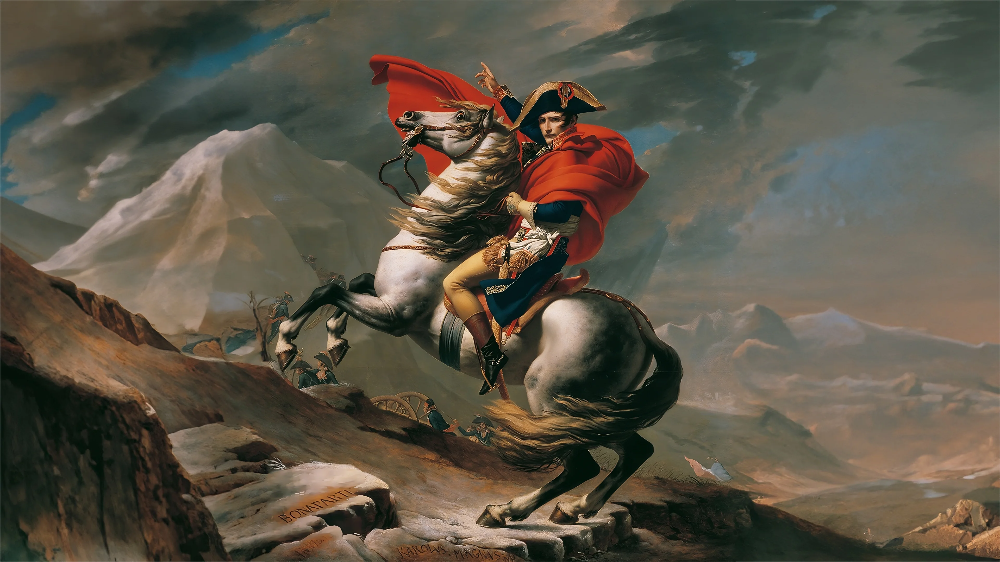

Introduction
Napoleon Bonaparte was a French military leader and emperor who rose to prominence during the French Revolution. He is known for his military campaigns and the vast expansion of the French Empire.
Key Accomplishments
- Conquered much of Europe and established the French Empire
- Introduced the Napoleonic Code, which influenced legal systems worldwide
- Reformed education, the economy, and governance in France
- Defeated in the Battle of Waterloo, leading to his exile
Important Events in Napoleon’s Life
- 1769: Born on the island of Corsica
- 1799: Became First Consul of France after a coup d'état
- 1804: Crowned Emperor of the French
- 1815: Defeated at the Battle of Waterloo and exiled to Saint Helena
Learn More
For more detailed information about Napoleon Bonaparte, you can visit this Wikipedia page.
